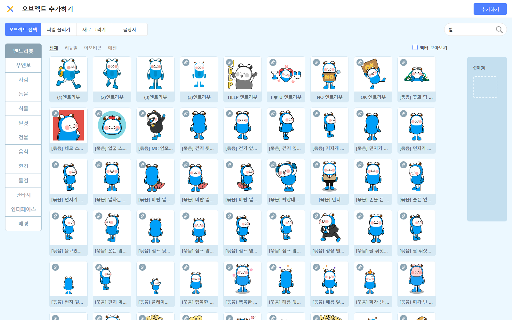
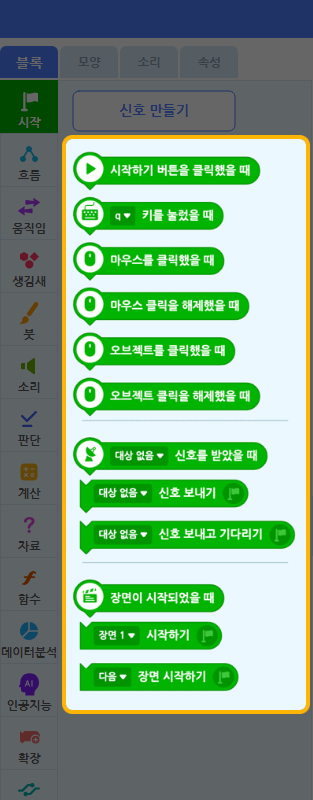
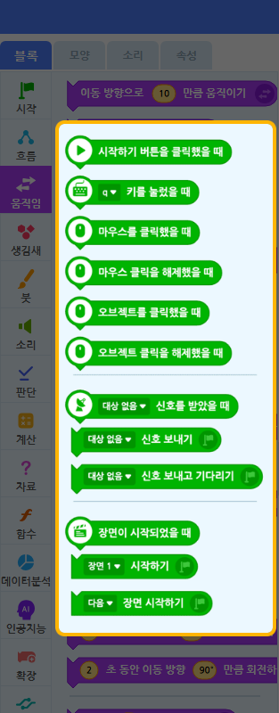
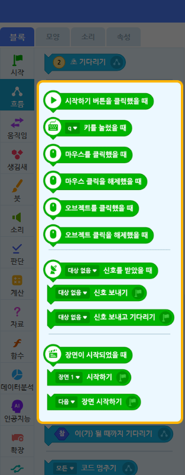
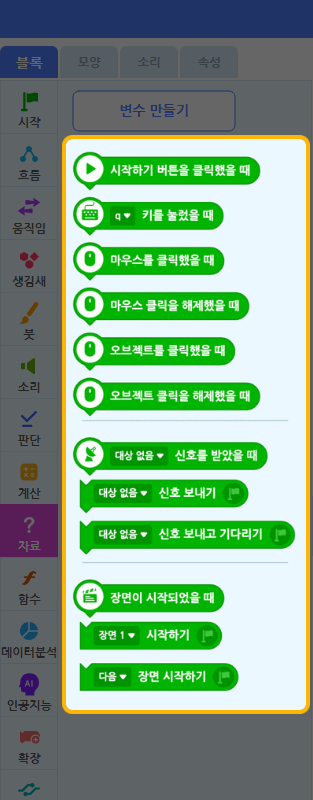

"좌우 키로 바구니를 움직여 위에서 떨어지는 별을 받자. 받으면 점수 +1!"
이미 만든 피하기 게임에서 다룬 반복 · 복제 · 조건 · 충돌 · 변수 위에, 이번에는 키보드 입력과 점수 누적 변수 두 가지 새 개념을 얹습니다.
이 문서는 강사용입니다. 아래 블록 배열은 정답입니다 — 수업 전 한번 직접 만들어 보세요. 단, 수업 중에는 자녀에게 정답 블록을 보여주지 말고 AI 도움 규칙(아래)으로 유도하세요.
좌측 하단 오브젝트 목록에서 "엔트리봇" 위에 마우스 올리기 → X 버튼 클릭.

+ 오브젝트 추가하기 → "배경" 탭 → 원하는 배경 선택.
상단 우측 "저장하기" 클릭 → 작품 이름 "별 받기". 한번 저장해두면 자동저장도 안전합니다.
아래 STEP에서 쓰는 카테고리 위치입니다. 막혔을 때만 참고하세요.




블록 모음 위쪽 검색창에 일부만 입력해도 찾아줍니다. 예: "키", "닿", "복제", "무작위", "더하기".
⚠️ 오브젝트 목록에서 "바구니" 클릭 (반드시 먼저!)
~ 키를 눌렀을 때 블록은 시작 카테고리에 있고, 드롭다운에서 "왼쪽 화살표" / "오른쪽 화살표"를 골라야 합니다. 기본값은 "스페이스" 같은 다른 키일 수 있습니다.
▶ 시작하기 → 실행 화면을 한 번 클릭(키 입력 활성화) → 좌우 화살표 키를 누르면 바구니가 좌우로 움직입니다.
이 "점수 0으로 정하기"는 딱 한 곳에만 있어야 합니다. 시작 블록을 여러 개 만들어 같은 초기화를 두 번 넣으면 점수가 꼬일 수 있습니다.
⚠️ 오브젝트 목록에서 "별" 클릭
원본 별은 모양 숨기기로 화면에서 안 보이게 두고, 복제본만 떨어지게 합니다. 그래야 깔끔하게 관리됩니다.
▶ 시작하기 → 1초마다 새 별 복제본이 생성됩니다 (아직 떨어지는 동작은 STEP 5에서 추가).
⚠️ 같은 "별" 오브젝트의 코드 영역에 새 시작 블록으로 별도 흐름을 추가합니다.
"닿았는가?"는 처음에 "마우스포인터에 닿았는가?"로 나옵니다. 드롭다운을 "바구니"로 변경해야 합니다. 닿으면 점수 +1 후 그 별을 삭제해야 한 번만 점수가 오릅니다.
▶ 시작하기 → 별들이 무작위 위치에서 떨어지고, 바구니로 받으면 점수가 1씩 오르며 받은 별은 사라집니다. 못 받고 바닥(-130)에 닿은 별도 사라집니다.
① 키보드 입력 — ~ 키를 눌렀을 때 블록. 마우스 따라가기와 달리, 플레이어가 키를 눌러 직접 조종합니다.
② 점수 누적 변수 — 점수 에 1 만큼 더하기. 변수에 값을 쌓아 올리는 경험.
③ 충돌의 의미 반전 — 피하기 게임에서 "닿으면 게임 오버"였던 충돌이, 여기서는 "닿으면 좋은 것(점수+1)"으로 바뀝니다. 같은 닿았는가? 블록을 정반대 의미로 사용하는 것이 핵심 통찰입니다.
바구니가 화면 밖으로 나감 → 좌우 끝 제한을 안 걸었기 때문. 지금은 그대로 두고, 아래 변형 아이디어에서 다룹니다.
점수가 두 번 초기화됨 → 점수 0으로 정하기가 들어간 시작 블록이 중복. 시작 블록을 정리하세요.
별이 한 줄로만 떨어짐 → 복제본 시작 위치 x에 무작위 수 블록을 안 끼움.
점수가 한 별에서 여러 번 오름 → 닿았을 때 이 복제본 삭제하기를 빠뜨림 (계속 닿아 있어 +1이 반복됨).
화면이 점점 느려짐 → 바닥(-130) 도달 시 삭제 누락으로 복제본이 무한 누적.
키를 눌러도 안 움직임 → 실행 화면을 한 번 클릭해 키 입력을 활성화했는지, 그리고 오브젝트가 "바구니"로 선택돼 있는지 확인.
(1) 10분 혼자 생각 → (2) AI에게 힌트만 요청 → (3) 직접 수정 + 말로 설명
자녀가 막혀도 즉답하지 않기. "어디서 막혔는지 말로 설명해봐" → "그럼 어떤 블록이 필요할 것 같아?" 순서로 유도하세요.
완성 후 "이 블록이 왜 이렇게 동작하는지 말로 설명할 수 있는가?"를 꼭 확인하세요. 특히 "닿았는가?를 왜 점수 올리는 데 썼는지" 설명하게 해보세요.
자녀가 빨리 끝나거나 더 만들고 싶어할 때:
이런 변형도 AI에게 "어떤 블록을 추가해야 할까?"로 묻게 유도하세요.
이 가이드는 Kay님이 한번 직접 따라 만들어본 후의 안정감을 위한 것. 손으로 한번 해보면 자녀가 어디서 막힐지 자연스럽게 보입니다.